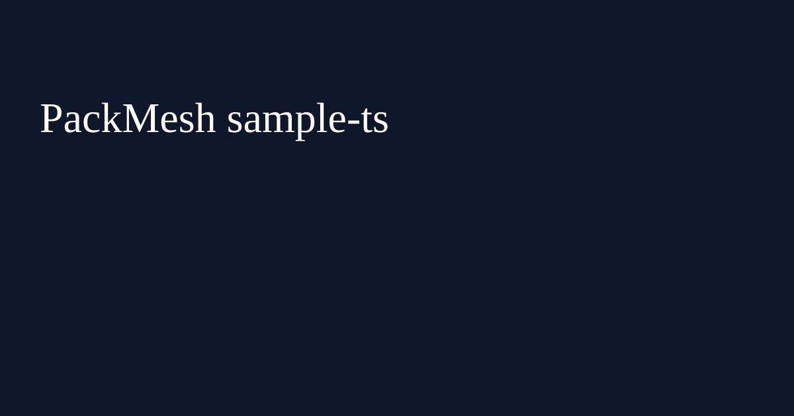

Version badge: v0.1.0 · Last updated: 2026-02-17
Reference UIs for the PackMesh Developer API with resilient clients and copy-ready curl commands.
Why this matters for businesses: these sample apps help engineering and operations teams ship integrations faster, lower implementation risk, and demonstrate ROI with measurable KPI gains in packaging efficiency, cube utilization, and shipment planning accuracy.
